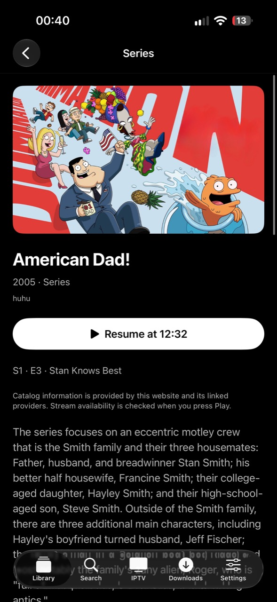
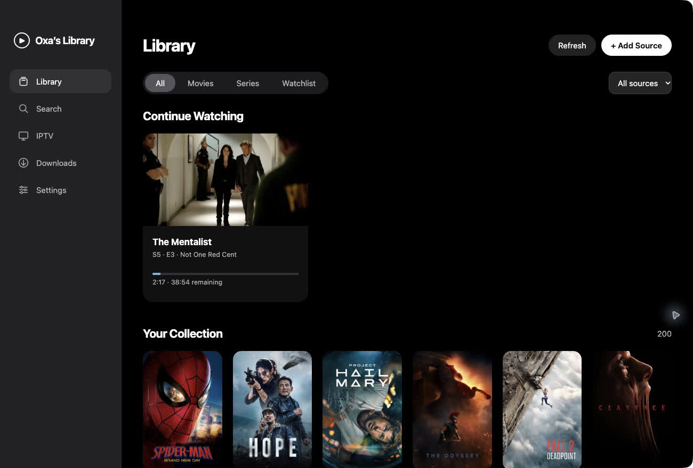

Pick up where you left off.
Pause on your iPhone and resume at the same second on your Mac. Continue Watching and New Episodes keep your place in every series, with artwork, seasons and episodes ready on any screen.

Your films, series and live TV.
One library, on every screen.
Free and open source. For iPhone, Mac, Windows and the web.

Connect the sources you already use. Oxa brings them together and remembers where you stopped.
Pause on your iPhone and resume at the same second on your Mac. Continue Watching and New Episodes keep your place in every series, with artwork, seasons and episodes ready on any screen.

Save single episodes or a whole season in the iPhone, Mac and Windows apps, then watch without a connection. Remove a download whenever you’re done.
Several sources appear together in one library. Oxa doesn’t include any films or channels.
Channels, groups and favorites get their own tab, with what’s on now and next from your provider’s program guide.
Your library can stay on your device. Sign in with email to sync your watchlist, progress and connections between devices.
Free on every platform. Your device is shown first.
Your device
Version 1.0.1 · macOS 14 or later
Download for Apple Silicon Download for IntelOpen the disk image and drag Oxa’s Library to Applications. The app is not notarized, so macOS may ask you to allow it in Privacy & Security.
Your device
Version 1.3.1 · iOS 18 or later
Download IPA AltStore Classic setupThe IPA is unsigned. Sign and install it with ESign or AltStore Classic, and keep the same signing identity when you update so your library stays in place.
Your device
Version 1.0.1 · Windows 10 or 11
Download for Windows Release notesOne installer picks x64 or ARM64 for your PC. It has no publisher certificate yet, so Windows may show a security prompt before it runs.
Your device
Chrome, Safari, Edge and Firefox
Open in browser Source codeNothing to install, and the same watchlist and progress when you sign in. Many hosted servers open on their own site, and downloads stay in the apps.
Oxa’s Library is a free, open-source media player for films, series and live TV. It gathers your own sources, such as a Jellyfin, Plex or Emby server, an M3U playlist or an Xtream Codes provider, into one library with Continue Watching, a watchlist and new-episode tracking, on iPhone, Mac, Windows and in the browser.
Yes. Add an M3U playlist or Xtream Codes login and Oxa shows your channels with groups, favorites, channel search and an XMLTV program guide, in their own Live TV tab.
No. Oxa’s Library plays the sources you add. You need permission to access and download their media.
No. Your library can stay on your device. Email sign-in is optional and turns on sync. Apple and Google sign-in are not included.
No. Provider restrictions, expired links, DRM and unsupported codecs can stop playback or offline saving. In the web app, many hosted servers open on their own site instead.
Only if your server is reachable from the network you are on. An account syncs connection settings; it doesn’t open a private home server to the internet.
Your sources, viewing history and watchlist stay. Older encrypted sources need a one-time transfer from an updated device that already has them.
Yes. The apps and the web app are free, the code is open source under the MIT licence, and there are no ads or subscriptions.